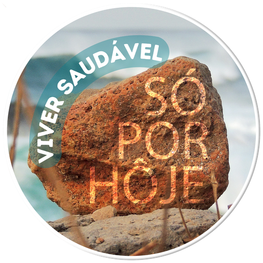
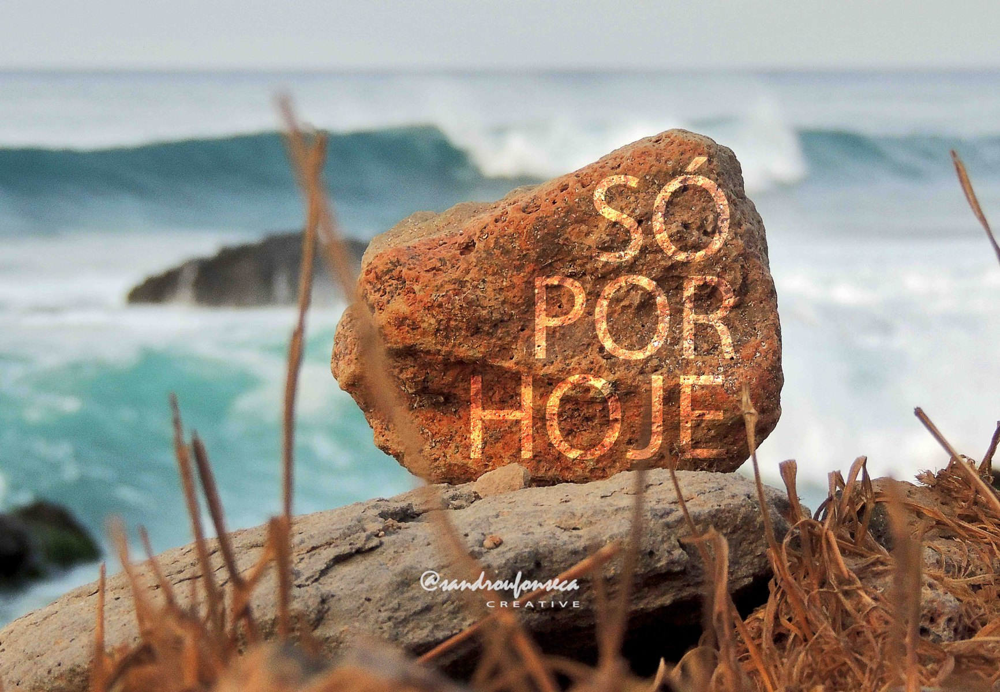
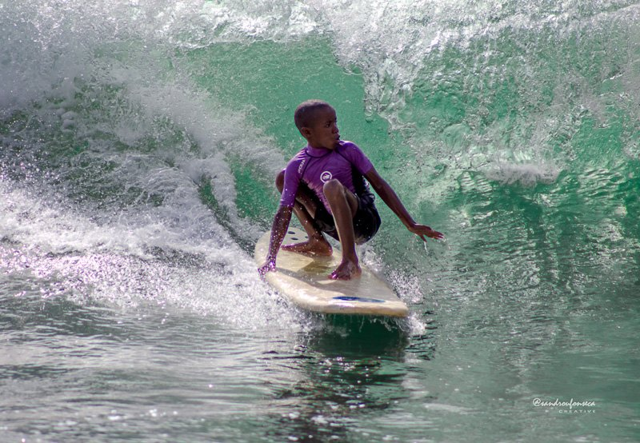
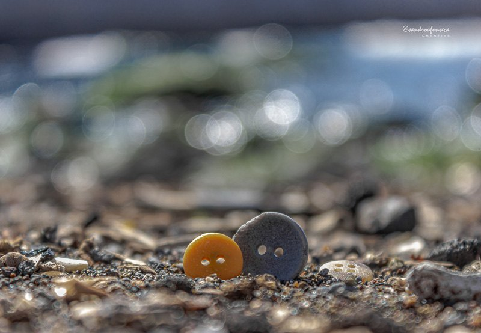
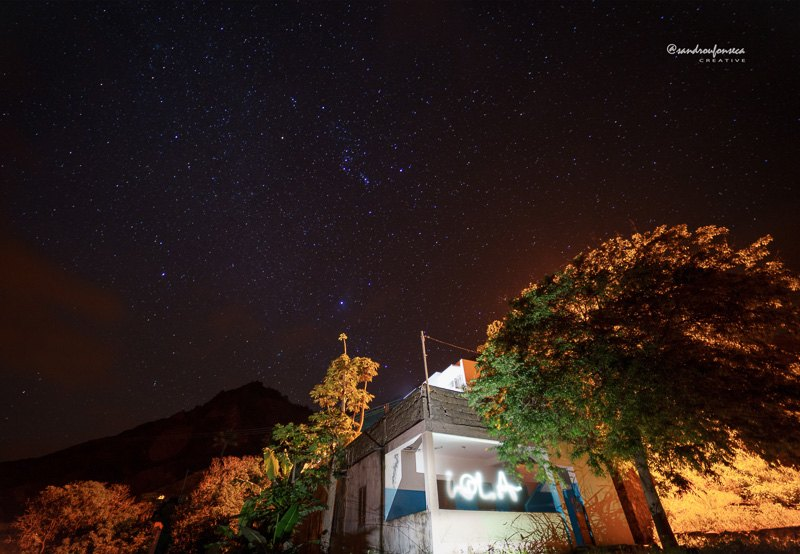
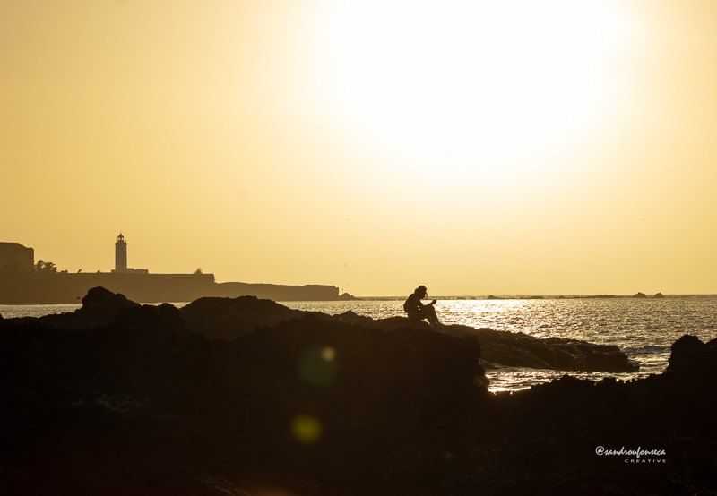
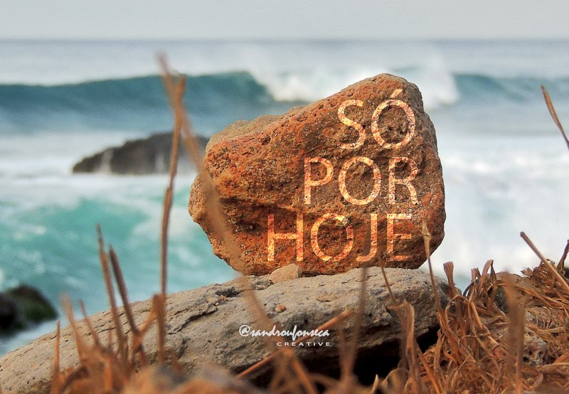
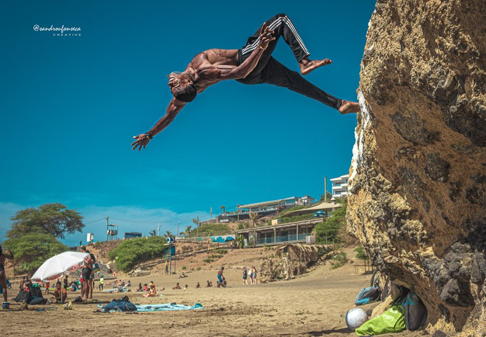

A carregar meditação
A ligar à base de dados local...
Não foi possível carregar
A API local não respondeu.
Meditação do Dia
Só por hoje

Guerreiros de Luz
A ligar à base de dados local...
A API local não respondeu.
Um dia de cada vez.
O maior ato de coragem é continuar, mesmo quando tudo parece difícil.
Um espaço pessoal para acompanhar a recuperação diária, sem julgamento. Os dados ficam guardados apenas neste navegador.
Define a tua data para contar os dias limpos.
Escolhe um estado para receber uma sugestão prática para hoje.
Esta plataforma não substitui técnicos de saúde, sponsor, terapeuta ou reunião. Se estiveres em perigo, procura ajuda presencial ou contacto de emergência.

Uma jornada de recuperação em 12 obras.
Fotografias de Sandro Fonseca sobre presença, fé, coragem, serenidade e recomeço. Histórias e testemunhos podem entrar numa fase posterior.
Partilhas guardadas só neste navegador nesta fase. Boa para prototipar a experiência antes de ligar a uma base de dados real.






Informação inicial para encontrar apoio próximo. Esta lista deve ser validada antes de publicação definitiva.
Praia · grupos presenciais indicados pela comunidade.
Santiago · grupo NA/AA referido pela CCAD. Validar local, horário e contacto.
Santiago · grupo referido pela CCAD. Validar se continua ativo.
Santiago · grupo referido pela CCAD. Validar local e dias.
Santiago · grupo referido pela CCAD. Validar local e dias.
Santiago · grupo referido pela CCAD. Validar local e contacto.
Sal · grupo referido pela CCAD. Validar horário atual.
São Vicente · grupo referido pela CCAD. Validar local, horário e contacto.
Comissão de Coordenação do Álcool e outras Drogas · Edifício Santo António, Achada Santo António, Praia.
Telefone: 262 31 29 / 333 72 43 · Email: ccad@ms.gov.cv · Facebook: @ccad.cv
800 25 27 · serviço nacional de informação, aconselhamento e encaminhamento.
Espaço de Respostas Integradas às Dependências no Centro de Saúde de Achadinha.
Achada São Filipe, Santiago · comunidade terapêutica para tratamento e reinserção social.
Contactos indicados: +238 264 80 84 / +238 264 80 85 / +238 264 80 87.
Promoção e prevenção · telefone indicado: +238 595 80 38 · email: centrosaude21@gmail.com.
ONG · centro de resgate e restauração para homens, referido pela CCAD.
ONG · resposta de reabilitação para álcool e outras drogas, referida pela CCAD.
Centro residencial iniciado em Cabo Verde em 2018, referido pela CCAD.
Internamentos curtos para desabituação física e atendimento ambulatório.
Base inicial retirada da CCAD. Antes de publicar, validar horários, moradas, contactos e estado atual de cada resposta.
Concedei-me, Senhor, a serenidade necessária para aceitar as coisas que não posso modificar, a coragem para modificar aquelas que eu posso, e a sabedoria para distinguir umas das outras.
Vivendo um dia de cada vez, desfrutando um momento de cada vez, aceitando as dificuldades como um caminho para alcançar a paz.
Aceitando, como tu, este mundo pecador tal como ele é, e não como eu gostaria que fosse, confiando que endireitarás todas as coisas, se me render à Sua vontade.
Para que eu possa ser moderadamente feliz nesta vida, e sumamente feliz contigo na eternidade.
Amém.